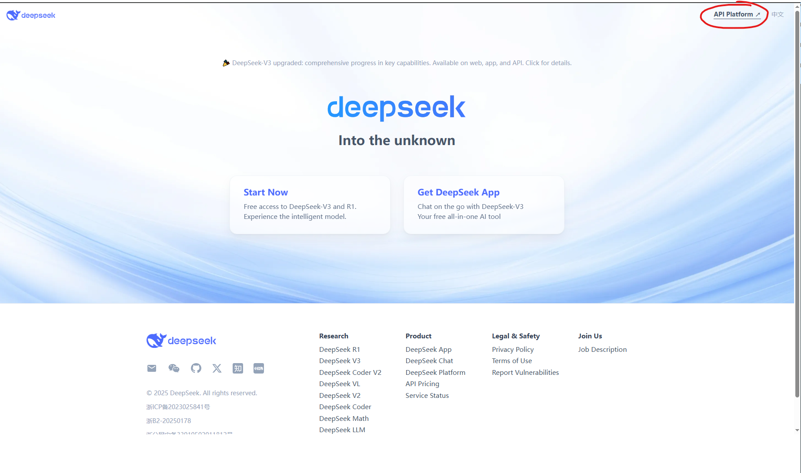
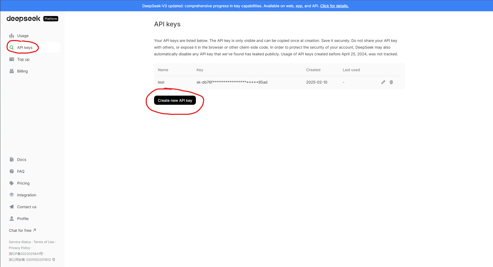

Obtaining DeepSeek API Key
Overview
This guide walks through the process of obtaining and configuring your DeepSeek API key for integration with third-party applications.
Prerequisites
Active DeepSeek account (register at https://www.deepseek.com/en)
Step 1: Access API Key Section
Navigate to the DeepSeek portal: https://www.deepseek.com/en
Click API Platform
Login to your account
{kind=link}

Step 2: Generate New API Key
In the left sidebar, click “API Keys”
Select “Create new API Key”
In the dialog: - Enter a name - Click “Create API key”
{kind=link}

Fig. 1 API key generation interface
Verification
To verify successful integration:
curl https://api.deepseek.com/chat/completions \
-H "Content-Type: application/json" \
-H "Authorization: Bearer <DeepSeek API Key>" \
-d '{
"model": "deepseek-chat",
"messages": [
{"role": "system", "content": "You are a helpful assistant."},
{"role": "user", "content": "Hello!"}
],
"stream": false
}'
# Please install OpenAI SDK first: `pip3 install openai`
from openai import OpenAI
client = OpenAI(api_key="sk-api here", base_url="https://api.deepseek.com")
# DeepseekV3: deepseek-chat DeepseekR1: deepseek-reasoner
response = client.chat.completions.create(
model="deepseek-reasoner",
messages=[
{"role": "system", "content": "You are a helpful assistant"},
{"role": "user", "content": "Hello"},
],
stream=False
)
print(response.choices[0].message)
Troubleshooting
Symptom |
Solution |
|---|---|
“Invalid API Key” |
Regenerate key and re-configure |
Rate limiting |
Check quota at DeepSeek portal |
Connection timeout |
Verify network restrictions |
Security Notes
Store keys in secure password managers
Never commit keys to version control
Rotate keys quarterly
Restrict keys by IP when possible